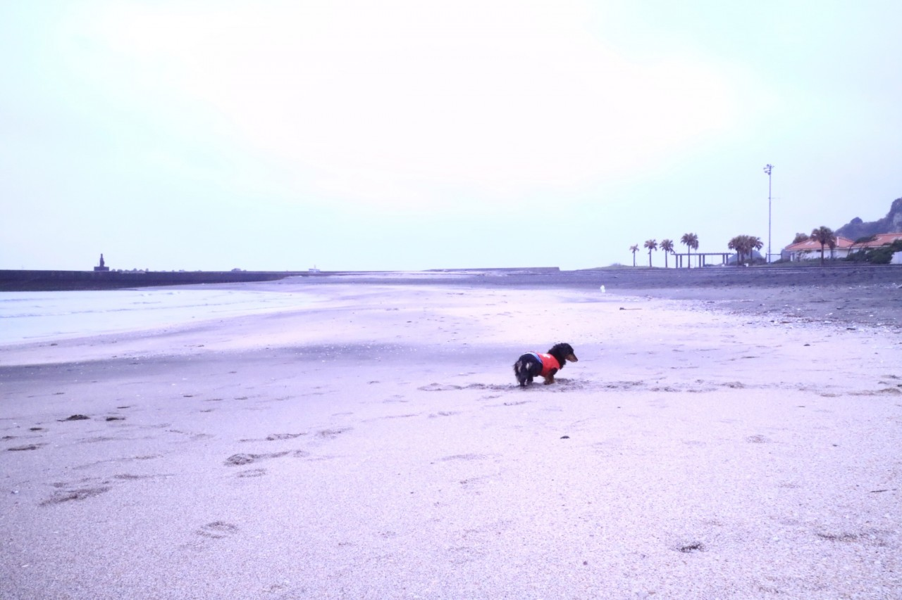

| 2017/05 01 Mon | 斎藤ちはる 一番星 |
昨日は皆さん驚かせてしまってすみません。
どんな事を書いたらいいのか分からず
短文になってしまいました。
短文なのにも関わらず
沢山の方が温かい言葉をかけてくださって
心が少し楽になった気がします
ありがとうございます。
さくちゃんのことを思い出したり
さくちゃんの寝顔を見たり
家族の涙を見たり
写真を見ていたり
コメントを読んだりしたら
例え歯磨きをしていても
電車の中でも
寝る直前でも
どんな時でも
まだ涙が止まりません。
なのでまだ今は沢山泣きたいと思います
沢山沢山泣いて、
涙が枯れるまで泣いたら、
私はさくらのために泣くのではなく
さくらのために笑いたいと思います
きっとさくらは笑顔を望んでるから。
実は1ヶ月前に、
さくらは肺がんにかかったと言われ
余命1ヶ月と宣告されました。
そう宣告された時はまだ元気で
そんなはずはないと信じていませんでした
しかし日が経つにつれさくらの息遣いに
大きな違和感を感じました
息をするのが苦しそうで
大好きなご飯を食べるのさえ拒んで
元気に走り回る姿は見られませんでした
そして最後息をひきとる直前
私たちの顔をそれぞれ見回したあとに
尻尾を振ってくれました。
息をする気力も、
立ち上がる気力さえ残ってないのにも関わらず
何かを伝えるかのように
沢山尻尾を振って私達を見てくれました
あの尻尾が、
ありがとうや楽しかったよと
さくちゃんの気持ちを伝えてくれているようで
涙が止まらなかった
幸せだったかな？
私たちはさくちゃんがいてくれたから
心から幸せだったし
楽しい毎日を送れたよ。
今は本当にありがとうを伝えたい
さくちゃん、
幸せをありがとう
私たちの家族になってくれてありがとう
元気で過ごしてくれてありがとう
辛い時も苦しい時も側にいてくれてありがとう
お家を守ってくれてありがとう
私たちを支えてくれてありがとう
幸せ以上の沢山の気持ちをありがとう
今までもこれからもずっと大好きだよ

どんな事があっても
毎日更新しようと書き続けたブログでしたが
今までのように書けそうもありません。
ごめんなさい。
少しお休みさせてください